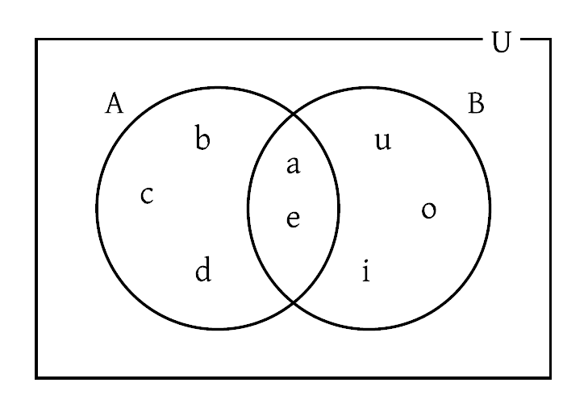
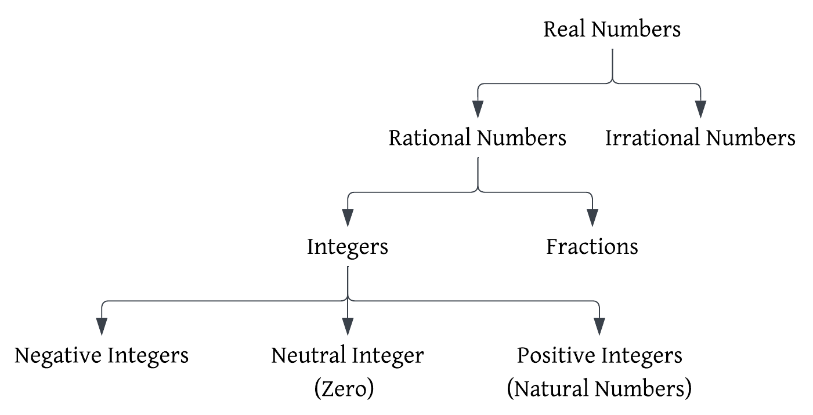
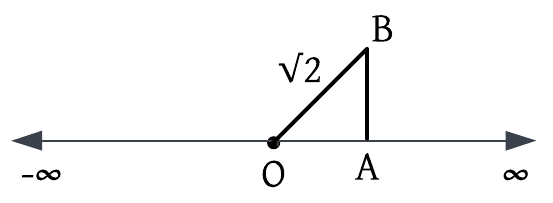

| Contents | |
| Unit | Chapter |
| 1. Algebra | 1. Logic, Sets and Real Number System 2. Functions 3. Curve Sketching 4. Sequence and Series 5. Matrices and Determinants 6. Quadratic Equations 7. Complex Numbers |
| 2. Trigonometry | 8. Inverse Circular Functions and Trigonometric Equations |
| 3. Analytic Geometry | 9. Analytic Geometry 10. Pair of Straight Lines 11. Coordinates in Space |
| 4. Vectors | 12. Vectors |
| 5. Statistics and Probability | 13. Measure of Dispersion 14. Probability |
| 6. Calculus | 15. Limits and Continuity 16. The Derivatives 17. Applications of Derivatives 18. Antiderivatives |
| 7. Computational Methods | 19. Numerical Computation 20. Numerical Integration |
| 8. Mechanics | 21. Statics 22. Dynamics |
#Logic
Logic (derived from word 'Logos' which means reason) is the science of reasoning. Logic tells us the truth and the falsity of the particular statement. Logic is the process by which we arrive at a conclusion from the given statement with a valid reason.
There are 2 types of reasoning:
In logic, we use symbols for words, statements and their relations to get the required result. Hence, logic is known as mathematical logic or symbolic logic.
#Statement
A statement is an assertion (declaration) expressed in words or symbols, which is either true or false but not both at the same time. In the context of logic, a statement cannot be imperative, interrogative or exclamatory.
| Types of Statement | |
| On the basis of truth value | Open statement: An open statement is the statement whose truth or falsity can be decided after filling the gap in them or substituting the value of the variable. |
| Closed statement: A closed statement is the statement whose truth or falsity cannot be decided. It does not have a gap as the open statement. | |
| On the basis of structure | Simple statement: A simple statement is the statement which declares only one thing. It cannot be divided into two or more statements. |
| Compound statement: A compound statement is the combination of two or more simple statements. It can be divided into two or more statements which are called component statements. | |
#Truth Value and Truth Table
Truth value refers to the truth or falsity of a statement. T → Statement is True and F → Statement is False. The truth value of a simple statement depends upon only the given statement. But in a compound statement, its truth value depends on both the component statement and the connectives used.
Truth table is the table presenting the truth values of the component statements together with their truth values.
#Logical Connective
Logical connectives are the words or phrases which connect the component statements in a compound statement. All the logical connectives are given below:
| Connective | Symbol | Definition | Truth Table | ||
| Conjucntion | \( \wedge \) | Two simple statements combined by the word 'and' (or an equivalent word), to form a compound statement, is known as conjuction of the given statements. | \( p \) | \( q \) | \( p \wedge q \) |
| T | T | T | |||
| T | F | F | |||
| F | T | F | |||
| F | F | F | |||
| Disjucntion | \( \vee \) | Two simple statements combined by the word ‘or’ (or an equivalent word) to form a compound statement, is known as disjunction of the given statements. | \( p \) | \( q \) | \( p \vee q \) |
| T | T | T | |||
| T | F | T | |||
| F | T | T | |||
| F | F | F | |||
| Conditional (Implication) |
\( \Rightarrow \) | Two simple statements combined by ‘if…then’ to form a compound statement, is known as conditional of the given statements. | \( p \) | \( q \) | \( p \Rightarrow q \) |
| T | T | T | |||
| T | F | F | |||
| F | T | T | |||
| F | F | T | |||
| Biconditional (Equivalence) |
\( \Leftrightarrow \) | Two simple statements combined with ‘if and only if’ (abbreviated as iff) to form a compound statement, is known as biconditional of the given statements. | \( p \) | \( q \) | \( p \Leftrightarrow q \) |
| T | T | T | |||
| T | F | F | |||
| F | T | F | |||
| F | F | T | |||
#Terminology
| Negation | A statement which denies the given statement is known as the negation of the given statement. If \( p \) is a statement then \( \sim p \) is said to be the negation of the statement \( p \). |
| Tautology | A compound statement which is always true, whatever may be the truth values of its components, is known as tautology. |
| Contradiction | A compound statement which is always false, whatever may by the truth values of its components is known as contradiction. |
| Converse | If \( p \) and \( q \) are two simple statements then the conditional \( q \Rightarrow p \) is said to be the converse of the conditional \( p \Rightarrow q \). |
| Inverse | If \( p \) and \( q \) are two simple statements then the conditional \( \sim p \Rightarrow \sim q \) is said to be the inverse of the conditional \( p \Rightarrow q \). |
| Contrapositive | If \( p \) and \( q \) are two simple statements then the conditional \( \sim q \Rightarrow \sim p \) is said to be the contrapositive of the conditional \( p \Rightarrow q \). |
| Logically Equivalent | Two statements \( S_1 \) and \( S_2 \) are said to be logically equivalent if both have same truth values in the columns of the truth table. They are denoted by \( S_1 \equiv S_2 \). |
#Laws of Logic
Primary Laws of Logic
| Law of Excluded Middle | Only statement \( p \) or \( \sim p \) is true. A statement cannot be both true and false at the same time. |
| Law of Tautology | The statement \( p \text{ } \vee \sim p \) is always true and hence a tautology. Thus, the disjunction of a statement and its negation is a tautology. |
| Law of Contradiction | The statement \( p \text{ } \wedge \sim p \) is always false and hence a contradiction. Thus, the conjunction of a statement and its negation is a contradiction. |
| Law of (Involution/Double Negation) | The negation of negation of a statement is logically equivalent to a given statement. Symbolically, \( \sim ( \sim p) \equiv p \) . |
| Law of Syllogism | If \( p \Rightarrow q \) and \( q \Rightarrow r \) then \( p \Rightarrow r \). That is \( (p \Rightarrow q) \wedge (q \Rightarrow r) \Rightarrow (p \Rightarrow r) \) . This can be verified to be a tautology. |
| Law of Contraposition | \( (p \Rightarrow q) \equiv ((\sim q) \Rightarrow (\sim p)) \) The conditional and its contrapositive are logically equivalent. |
| Inverse Law | \( (\sim p) \Rightarrow (\sim q) \equiv q \Rightarrow p \) The inverse and the converse of a conditional are logically equivalent. |
Secondary Laws of Logic
| Idempotent Law | \( p \wedge p \equiv p \) | \( p \vee p \equiv p \) |
| Commutative Law | \( p \wedge q \equiv q \wedge p \) | \( p \vee q \equiv q \vee p \) |
| Associative Law | \( p \wedge (q \wedge r) \equiv (p \wedge q) \wedge r \) | \( p \vee (q \vee r) \equiv (p \vee q) \vee r \) |
| Distributive Law | \( p \wedge (q \vee r) \Leftrightarrow (p \wedge q) \vee (p \wedge r) \) | \( p \vee (q \wedge r) \Leftrightarrow (p \vee q) \wedge (p \vee r) \) |
| De-Morgan's Law | \( \sim (p \wedge q) \equiv (\sim p \text{ } \vee \sim q) \) | \( \sim (p \vee q) \equiv (\sim p \text{ } \wedge \sim q) \) |
Set and Its Notation
Set is the collection of well-defined objects. Each object of a set is called an element or member of the set.
Sets are usually denoted by capital letters such as A, B, X, Y, etc.
Membership of a Set
\( \in \) → 'belongs to' or 'is an element' or 'is the member of'
\( \not\in \) → 'does not belong to' or 'is not the element of'
Special Types of Set
| Empty/null/void set | A set having no element is called the empty set or null set or avoid set. It is denoted by the Greek letter \( \phi \) (phi) or { }. |
| Finite set | A set containing a finite number of elements is known as a finite set. |
| Infinite Set | A set which is not finite is known as an infinite set. |
Relation between Sets
| Subset and Superset | A set \( \text{A} \) is said to be a subset of the set \( \text{B} \) if every element of \( \text{A} \) is also an element of \( \text{B} \). This relation is denoted by \( \text{A} \subseteq \text{B} \). Here, \( \text{B} \) is called the superset of \( \text{A} \) and we write it as \( \text{B} \supseteq \text{A} \) If every element of set \( \text{A} \) is also an element of set \( \text{B} \) but there is at least one element of \( \text{B} \) which is not an element of \( \text{A} \), then \( \text{A} \) is known as the proper subset of \( \text{B} \). This relation is denoted by \( \text{A} \subset \text{B} \). |
| Equal sets | Two sets \( \text{A} \) and \( \text{B} \) are said to be equal or identical or same if they have the same elements. They are denoted \( \text{A} = \text{B} \). If \( \text{A} \subseteq \text{B} \) and \( \text{B} \subseteq \text{A} \) then \( \text{A} = \text{B} \). |
| Intersecting sets | Two sets \( \text{A} \) and \( \text{B} \) are said to be intersecting if they have at least one element in common. |
| Disjoint sets | Two sets \( \text{A} \) and \( \text{B} \) are said to be disjoint if they have no elements in common. |
| Power set | The collection or the set of all possible subsets of a set is called its power set. Power set of a set \( \text{A} \) is denoted by \( \text{P}(\text{A}) \) or \( 2^{\text{A}} \). |
| Universal set | Universal set is the set which contains all the sets under discussion. It is denoted by \( \text{U} \). |
Venn Diagram
The diagrammatic representation of sets, set relations and set operations, is known as a venn diagram. It consists of a universal set \( \text{U} \) represented by a reactangle, subsets of \( \text{U} \) by the closed curves and the elements of the sets by the points withnin the closed curve.
E.g., The Venn-diagram of \( \text{A} = \{ a, b, c, d, e \} \) and \( \text{B} = \{ a, e, i, o, u \} \) is present alongside.

Operations on Sets
| Union | The union of two sets \( \text{A} \) and \( \text{B} \) is defined as the set of all elements which belong to \( \text{A} \) or \( \text{B} \) or both. Symbolically, \( \text{A} \cup \text{B} = \{ x: x \in \text{A} \) or \( x \in \text{B} \} \) \( x \in ( \text{A} \cup \text{B} ) \Rightarrow x \in \text{A} \) or \( x \in \text{B} \) \( x \not\in ( \text{A} \cup \text{B} ) \Rightarrow x \not\in \text{A} \) and \( x \not\in \text{B} \) |
| Intersection | The intersection of two sets \( \text{A} \) and \( \text{B} \) is the set of all elements belonging to both sets \( \text{A} \) and \( \text{B} \). Symbolically, \( \text{A} \cap \text{B} = \{ x: x \in \text{A} \) and \( x \in \text{B} \} \) \( x \in ( \text{A} \cap \text{B} ) \Rightarrow x \in \text{A} \) and \( x \in \text{B} \) \( x \not\in ( \text{A} \cap \text{B} ) \Rightarrow x \not\in \text{A} \) or \( x \not\in \text{B} \) |
| Difference | The difference of two sets \( \text{A} \) and \( \text{B} \) is the set of all elements of \( \text{A} \) not belonging to \( \text{B} \). Symbolically, \( \text{A} - \text{B} = \{ x: x \in \text{A} \) and \( x \not\in \text{B} \} \) Symbolically, \( \text{B} - \text{A} = \{ x: x \in \text{B} \) and \( x \not\in \text{A} \} \) |
| Complement | The complement of a set \( \text{A} \) is the set of all elements in the universal set \( \text{U} \) that do not belong to \( \text{A} \). Symbolically, \( \overline{\text{A}} = \{ x: x \in \text{U} \) and \( x \not\in \text{A} \} \) \( x \in \overline{\text{A}} \Rightarrow x \not\in \text{A} \) \( x \in \text{A} \Rightarrow x \not\in \overline{\text{A}} \) |
| Symmetric Difference | The union of the differences \( \text{A} - \text{B} \) and \( \text{B} - \text{A} \) of two sets \( \text{A} \) and \( \text{B} \) is the called the symmetric difference of \( \text{A} \) and \( \text{B} \) i.e. \( \text{A } \Delta \text{ B} = ( \text{A} - \text{B} ) \cup ( \text{B} - \text{A} ) \). Symbolically, \( \text{A } \Delta \text{ B} = \{ x: x \in (\text{A} - \text{B}) \) or \( x \in (\text{B} - \text{A}) \) \( x \in (\text{A } \Delta \text{ B}) \Rightarrow x \in \text{A} \) or \( x \in \text{B} \) but \( x \not\in (\text{A} \cap \text{B}) \) |
#Theorems based on Set Operation
Properties of Inclusion and Equality Relations
|
Properties of Unions
|
Properties of Intersections
|
Miscellaneous Properties
|
#Review of Real Numbers
| Natural Numbers | The simplest and the most familiar unending chain of consecutive numbers are known as natural numbers. They are also known as counting numbers. The set of natural numbers is denoted by \( \text{N} \). |
| Integers | The set of natural numbers together with their negatives including zero are known as Integers. The set of integers is denoted by \( \text{Z} \). \( \text{Z}^{-} \) → Negative Integer \( \text{Z}^0 \) → Neutral Integer (Zero) \( \text{Z}^{+} \) → Positive Integer |
| Rational Numbers | A number in the form of \( \frac{p}{q} \) where \( p \) and \( q \) are integers and \( q \neq 0 \), is known as a rational number. The set of rational numbers is denoted by \( Q \). |
| Irrational Numbers | Numbers which are not rational numebrs are known as irrational numbers. That is, a number which cannot be expressed in the form of \( \frac{p}{q} \) where \( p \) and \( q \) are integers and \( q \neq 0 \), is known as an irrational number. The set of irrational numbers is denoted by \( \overline{\text{Q}} \). |
| Real Numbers | The union of the set of rational and irrational numbers is known as real numbers. The set of real numbers is denoted by \( \text{R} \). |
Classification of Real Numbers

The family members of the real numbers have the following set relation: \( \text{N} \subset \text{Z} \subset \text{Q} \subset \text{R} \)
#Properties of Real Numbers
1. Closure property:
\( \text{If } a, b \in \text{R} \text{ then} \left\{ \begin{array}{l} a + b \in \text{R} \\ ab \in \text{R} \end{array} \right. \)
2. Commutative property:
\( \text{If } a, b \in \text{R} \text{ then} \left\{ \begin{array}{l} a + b = b + a \\ ab = ba \end{array} \right. \)
3. Associative property:
\( \text{If } a, b, c \in \text{R} \text{ then} \left\{ \begin{array}{l} a + (b + c) = (a + b) + c \\ a(bc) = (ab)c \end{array} \right.\)
4. Identity elements:
\( \text{For every } a \in \text{R} \left\{ \begin{array}{l} a + 0 = 0 + a = a \\ a \cdot 1 = 1 \cdot a = a \end{array} \right. \)
Hence, 0 and 1 are the additive and multiplicative identity of \( a \).
5. Inverse elements:
\( \text{For every} a \in \text{R} \left\{ \begin{array}{l} a + (-a) = (-a) + a = 0 \\ a \cdot a^{-1} = a^{-1} \cdot a = 1, (a \neq 0) \end{array} \right.\)
Hence, \( (-a) \) and \( a^{-1} \) are the additive and multiplicative inverse of \( a \).
#Order Property
The most basic order peroperty are:
Besides the above property, we have the following properties as well:
1. The Axiom of Trichotomy (Trichotomy property):
If \( a \) and \( b \) are two real numbers then one and only of the following relations is holded
\( a < b, a = b, a > b \)
2. The Axiom of Transitivity (Transitivity property):
\( \text{If } a, b, c \in \text{R} \text{ then} \left\{ \begin{array}{l} a > b, b > c \Rightarrow a > c \\ a < b, b < c \Rightarrow a < c \end{array} \right.\)
3. Addition property
\( \text{If } a, b, c \in \text{R} \text{ then} \left\{ \begin{array}{l} a > b \Rightarrow a + c > b + c \\ a < b \Rightarrow a + c < b + c \end{array} \right.\)
4. Multiplication property
\( \text{If } a, b, c \in \text{R} \text{ then} \left\{ \begin{array}{l} a > b \xrightarrow{\times \text{ } c, \text{ } (c \text{ } > \text{ } 0)} ac > bc \\ a > b \xrightarrow{\times \text{ } c, \text{ } (c \text{ } < \text{ } 0)} ac < bc \\ a < b \xrightarrow{\times \text{ } c, \text{ } (c \text{ } > \text{ } 0)} ac < bc \\ a < b \xrightarrow{\times \text{ } c, \text{ } (c \text{ } < \text{ } 0)} ac > bc \end{array} \right.\)
#Representation of a Real Number in a Real Number Line
The straight line in which the real numbers are plotted by means of the points is called the real number line. Thus, any point on the real number line is said to be a real number. Since the real numbers are categorized into two types: Rational and Irrational numbers, broadly we have the following representations of real number:
Representation of a rational number in a real number line
Representation of an irrational number in a real number line

Inequality
An inequality is a relation comparing two expressions that are not strictly equal, using symbols like < (less than), > (greater than), \( \leq \) (less than or equal to), or \( \geq \) (greater than). They define a range of possible values rather than a single solution.
#Interval
The set of points on the real number line between \( a \) and \( b \), is known as an interval. An interval is denoted by \( I \). An interval may or may not include the end points. On this basis, there are 4 different types of intervals:
| Open interval | An interval not containing both the end points \( a \) and \( b \), is known as an open interval. Symbolically, \( (a, b) = \{ x: a < x < b \} \) |
| Closed interval | An interval containing both the end points \( a \) and \( b \), is known as a closed interval. Symbolically, \( [a, b] = \{ x: a \leq x \leq b \} \) |
| Left open interval | An interval not containing the end point \( a \) but containing the end point \( b \), is known as the left open interval. Symbolically, \( (a, b] = \{ x: a < x \leq b \} \) |
| Right open interval | An interval containing the end point \( a \) and not containing the end point \( b \), is known as the right open interval. Symbolically, \( [a, b) = \{ x: a \leq x < b \} \) |
#Absolute Value
The absolute value (or modulus) of a number \( x \), is a non-negative real number defined by
\( |x| = \left\{ \begin{array}{l} -x & \text{if } x < 0 \\ x & \text{if } x \geq 0 \end{array} \right. \)
Geometrically, \( |x| \) is the distance from the origin to the number \( x \).
Moreover, the distance between any two numbers \( a \) and \( b \) on the real number line is \( |a - b| = |b - a| \).
Properties of (Absolute Values/Modulus)